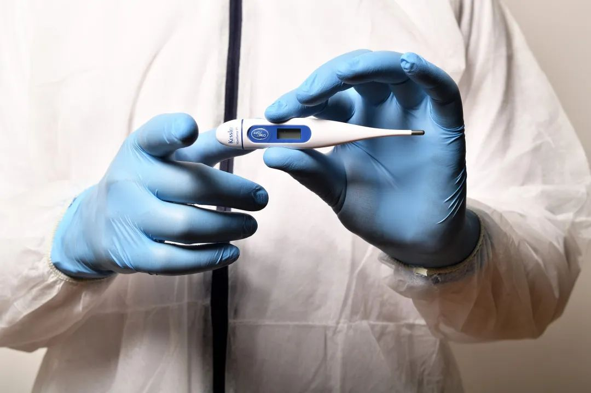

研究表明：新冠病毒可能于去年11月出现，近期变异不大
原文链接 备份链接 新冠病毒一直在变异，研究者发现截至目前仍较缓和。但鉴于当前疫情的严峻形势，共享病毒相关的数据对控疫更有帮助 室外环境中，患者咳嗽、说话等喷出来的病毒，很快会被大气稀释，在扩散过程中会衰减，所以浓度会变得很低，病毒活性也 …

新冠病毒一直在变异，研究者发现截至目前仍较缓和。但鉴于当前疫情的严峻形势，共享病毒相关的数据对控疫更有帮助。
本文 4173字，阅读全文约7分钟

图/pixabay
文/《财经》记者 孙爱民 编辑/王小
新冠病毒肺炎疫情已经两个多月，人们对罪魁病毒的认知还十分有限。
2月22日，南方医科大学学者通过对39条新冠病毒（SARS-CoV-2）序列进行研究，发现病毒可能出现在2019年11月左右。这一结论与学术界和官方认为的最早病例出现的时间相符：卫生部门与疾控系统普遍认可第一例病例发生于2019年12月8日，《柳叶刀》的一篇论文则认为是2019年12月1日。
对38个病毒毒株进行基因序列比较后，研究人员发现从疫情发生至今，病毒虽在变异，但变化不大。
研究人员发现了 117处变异，变异位点没有聚集性，相对均匀地分布在整个基因组，这表明目前的突变，尚未出现特别“激进”的变异之处。
该研究在《南方医科大学学报》网络首发，由南方医科大学公共卫生学院生物安全防护三级（P3）实验室副主任张宝教授领衔的科研团队完成。
全球多支研究团队，正在试图攻克新冠病毒。来自浙江、北京、湖北武汉等的多个P3实验室，正进行活体病毒的相关研究。
尽管病毒的基因组在疫情发生后很快被解析，基因组特征正被一层层揭晓，但这些特征还难以解释病毒为何具有强传播力。而病毒出现的时间，以及是否有中间宿主、传染源是什么、传染病是否会一直存在，也都是谜。这些问题，同样是解开新冠病毒强传播力的钥匙密码。
“说实话，我们仍然不知道病毒来自哪里”
谁是第一例新冠肺炎患者，至今没有消息，有人甚至已悲观地预测，会像SARS第一例患者的追寻一样，无疾而终。
从第一例患者，可以通过流行病学调查，来倒推病毒的由来、寻找传染源。以中国疾控中心为主要参加单位的论文，普遍将2019年12月8日作为此次疫情第一例患者的住院时间，这也是武汉市卫健委等官方认可的时间点。
中日友好医院副院长曹彬等，在《柳叶刀》上发表的论文，则将一例2019年12月1日住院的病例，作为疫情的第一例患者。
另一种方式，是通过对病毒基因序列的研究，通过病毒基因组的特性，来推测病毒出现的时间。张宝研究团队，应用进化时间信号分析软件TempEst，分析当前基因组数据，然后进行了tMRCA（最近共同祖先出现时间）分析。
按照上述思路，遴选最佳核苷酸替代模型参数，将其采样时间2020年1月23日作为第0天，研究者最终推算新冠病毒出现的时间为此前38.9天到119.3天，即2019年9月23日到2019年12月15日之间。“按照模型计算，病毒出现时间为1月23日往前平均73天，95%可信区间是38到113天。所以，2019年11月10日是平均值。”张宝对《财经》记者分析。
“病毒最先在2019年11月份出现”，这一推算与《科学》杂志的一篇报道相符。
1月24日，北京中日友好医院副院长曹彬、武汉市金银潭医院胸外科主任医师黄朝林等人，在《柳叶刀》上在线发表的论文，对最初感染的41个病人的临床症状进行了分析和总结，发现41例患者中有27例曾接触过华南海鲜市场，并将2019年12月1日的病例作为此次疫情的最早病例。
两天后，《科学》杂志因此撰文援引美国乔治敦大学传染病学专家Daniel Lucey的说法：如果12月1日出现首个病例，也确实没有华南海鲜批发市场的暴露史，考虑到潜伏期的因素，这个人很可能是在11月就感染了病毒，“这种病毒是先被带入市场，然后才被带出市场的”。
不过，曹彬在接受《科学》采访时称，“说实话，我们仍然不知道病毒来自哪里”。
变异一直在发生，未产生全新毒株
新冠病毒发生两个多月，截至2月24日18时，仅中国便有77000多例确诊患者。公众担心病毒是否在快速变异，会不会杀伤力更强。近期的多项研究，可扫除此种担忧。
张宝的研究团队，将38株病毒基因序列进行比较研究后发现：核苷酸之间变化差异非常小，以最早测定的序列为参考，共计有117处变异，变异位点没有聚集性，相对均匀地分布整个基因组。
香港研究者发现，从香港患者身上检测出来的毒株，与武汉患者毒株相比，只差6个核苷酸。
核苷酸是病毒的遗传物质，控制病毒的复制和决定病毒特性。整个SARS-CoV-2有3万核苷酸，目前有6个突变，只占极小的比例。
2月19日，中科院西双版纳热带植物园研究员郁文彬等学者，在中科院科技论文预发布平台ChinaXiv上发表的论文显示：研究者在对93个新冠病毒样本的基因组数据研究后发现，病毒基因组没有发生重组事件，93个基因组之间有120个核苷酸发生了突变，占序列长度的0.41%，这些突变均匀分散在10个编码区。
研究者的结论是，新冠病毒基因组尚未发生重组事件是一个好消息，也就是说不会产生全新的病毒毒株。
事实上，病毒的变异一直都在发生。新冠病毒是RNA病毒。“RNA病毒跟人的基因不一样，在复制过程中没有校准机制。”上海公共卫生临床中心一名研究人员告诉《财经》记者。
从进化角度来说，病毒的进化要对自身有利，把自己变得更“毒”，会把宿主杀光，自己也无处藏身，不利于繁衍。但传播速度更快，显然是SARS-CoV-2的利器。
有学者提醒，在疫情两个月后，要警惕新冠病毒传播进程的加快。
2月18日，中国科学院院士蒲慕明与中山大学生命科学学院教授吴仲义，在《国家科学评论》撰文指出：2003年SARS疫情期间，病毒在开始的两个月早期较慢传播后，进入了中期加速阶段。研究者提醒：SARS病毒进化的第一阶段恰好是两个月，此次疫情“最坏的可能性是，经历了两个月的‘慢进化’模式之后，2019-nCoV‘摸索’出了进化的途径，开始蠢蠢欲动。”
新冠病毒的传播力远超SARS病毒，尽管病毒基因组很快被破译，国内外多篇论文也揭示了基因组特征，但这些特征还难以解释新冠病的强传播力。
2月15日，美国国立卫生研究院 (NIH) 与德克萨斯大学奥斯汀分校Jason S.McLellan研究组进行合作，利用冷冻电镜技术分析发现，SARS-CoV-2和SARS病毒的S蛋白具有相同的功能性宿主细胞ACE2，但前者的ACE2胞外域吸引力，比SARS病毒高出10—20倍。
这仅仅是病毒传播力强解释的一方面。整个传播环节，包括病毒的入侵、脱壳、RNA转录合成、蛋白质翻译组装、病毒成熟、释放，都决定了传播能力。传播力强，说明病毒在人间具有很好的适应性，也许是时候改变我们周边的环境和自身的行为了。
“1月22日后的病毒序列均来自国外”
新冠病毒是否在人群中持续进化？如果答案是否定的，病毒没有快速变异，对于抵抗疫情是个定心丸。
病毒传播力的变化，与病毒基因组序列的变化相关，这种变化的跟踪，需要科学家对疫情不同阶段、不同地区的病毒序列进行比对研究。然而，这一工作的开展正受到阻滞。
“截至2020年2月10日，全球共有55条新型冠状病毒基因组数据公开发布，其中1月22日以前获取的31份测序数据几乎全部来自中国。然而1月22日以后，余下的24份数据一律源于境外。”蒲慕明院士与吴仲义教授在上述评论中指出，“数据背景的断层，使我们很难在时间与地理上找到连续的规律”。
首个将新冠病毒的序列公布在virological.org网站，供全球研究者共享的，是中国疾控中心研究员、复旦大学公共卫生学院兼职教授张永振的团队。他们在北京时间1月11日上午提交了序列。virological网站是一个病毒学、传染病学公开论坛。
“尽管张永振团队提交的序列，没有样品收集日期，但他所做的贡献非常大，序列分析的非常好。”张宝说，序列提交是非常重要的，相当于原始数据，是分析病毒变异进化、特性等工作的基础源泉，足够多的序列对于科学研究至关重要，“数据的质量，也是非常关键的，比如：样品的收集的日期、病人的地点，病人与病人之间的关系，病人疾病的状态等。”
然而，据知情人士透露，张永振所在的上海公共卫生临床中心P3实验室，并在1月13日关停整顿。该实验室在提交了整改报告之后，未得到明确答复。“不知道是什么原因，但一切都发生在基因序列公开之后的。重新申请活病毒的培养等相关的研究，也无法得到审批。”一位上海公共卫生临床中心工作人员说。
“对于活病毒的培养，比如跟踪病毒变异相关的研究，需要P3实验室得到监管部门的批准。而他们实验室由于还处于整顿期间，目前只能做一些临床检测。”上述实验室的一名合作方告诉《财经》记者。
该实验室关停的原因是什么，在整顿后何时可以开展相关的试验工作？截至发稿，上海市卫健委未予回应。
17年前的SARS疫情防控，可为此次疫情控制提供参考。但前提是需要更多的病毒基因组研究、序列发布，以便科学家对比这两种病毒，了解它们进化动态的差异。
正如蒲慕明院士与吴仲义教授在评论文章中所言：“鉴于当前疫情的严峻形势，选择不公开病毒相关的数据是有悖科研道德的。”
【版权声明】本作品著作权归《财经》独家所有，授权深圳市腾讯计算机系统有限公司独家享有信息网络传播权，任何第三方未经授权，不得转载。

系列报道
◤活粒为《财经》杂志 科技与健康团队 的新媒体项目，坚持独立、独家、独到，合作／爆料请联系：yingxin@caijing.com.cn◢

《财经》旗下健康领域深度报道专栏
扫一扫：

文章已于修改
原文链接 备份链接 新冠病毒一直在变异，研究者发现截至目前仍较缓和。但鉴于当前疫情的严峻形势，共享病毒相关的数据对控疫更有帮助 室外环境中，患者咳嗽、说话等喷出来的病毒，很快会被大气稀释，在扩散过程中会衰减，所以浓度会变得很低，病毒活性也 …
原文链接 备份链接 病毒的溯源、从动物到人的传播路径、人与人间的传播方式，这些研究还在进行中，抗病毒的疫苗和特效药的研发、验证，还只是初现曙光 文 |《财经》记者 孙爱民 信娜 辛颖 编辑 | 王小 谁也不会想到，2019年的最后一天， …
原文链接 备份链接 1月26日，中国疾控中心病毒病所表示，该中心已成功分离新冠疫苗病毒，正在筛选种子毒株。种子毒株的筛选是研发疫苗的第一步，全国十几家机构都在基于此争分夺秒地推进新冠疫苗的研发。 接受采访的研究者们表示，新冠疫苗需要跟时 …
原文链接 备份链接 市场反馈认为，公共卫生事件对经济的影响有限；在应对疫情的关键时刻，政治和金融市场应对疫情展示出截然不同的态度 文 |《财经》特派记者 金焱 发自华盛顿 编辑 | 苏琦 2月11日，世界卫生组织通过社交媒体推特发布其确定 …
原文链接 备份链接 【财新网】（记者 杨睿 冯禹丁 赵今朝）“阴谋论者不相信科学。我希望国家专业部门来调查，给我们一个清白。”中国科学院武汉病毒研究所研究员石正丽2月4日回复财新记者称，“我自己的话没有说服力，我不能控制别人的思想和言 …